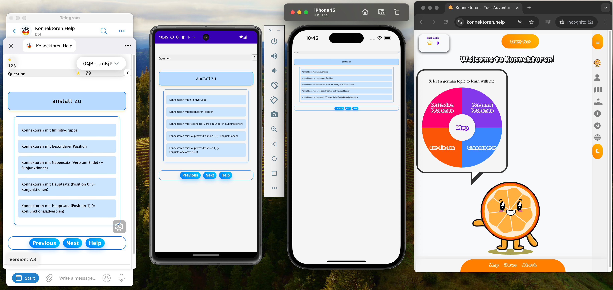

Our project is dedicated to making learning German grammar easy and fun.
View All Grammar Challenges →Konnektoren is a comprehensive platform designed to simplify the process of learning German grammar. Our mission is to provide high-quality, interactive educational resources that cater to the needs of learners at all levels.
Choose your preferred learning platform:
Engage with the language through interactive lessons that ensure better retention of grammatical rules.
Keep track of your progress with our intuitive dashboard, helping you stay motivated and on track.
Get a personalized learning path that adapts to your performance and learning speed.
Unlock various achievements as you progress, providing extra motivation and recognition for your efforts in learning German.
Earn blockchain-backed SSI badges to showcase your German language achievements securely and verifiably.
Access Konnektoren on all your devices, including desktops and web. Versions for tablets and smartphones are planned.

Download from AppImageHub: konnektoren-app
Choose from our selection of language learning platforms, each tailored to help you master your target language:
Our interactive lessons use a variety of engaging methods to help you learn and retain German grammar:
Stay motivated with our comprehensive progress tracking system:
Our AI-driven system creates a unique learning journey for each user:
Our achievement system adds an extra layer of motivation and fun to your learning experience:
Showcase your achievements with our cutting-edge SSI badge system:
To get started with SSI badges, complete challenges on Konnektoren and claim your badge using an SSI-compatible digital wallet.
Konnektoren's learning path follows the Common European Framework of Reference for Languages (CEFR), guiding you from beginner to advanced levels with progressively challenging exercises.
Start your German journey with foundational grammar. You'll build a solid base in core concepts, focusing on everyday vocabulary and simple sentence structures.
Expand your grammatical knowledge and build confidence. You'll delve deeper into verb conjugations and sentence structures, expanding your vocabulary and ability to engage in basic conversations.
Refine your grammar skills and enhance fluency. You'll tackle more complex sentence structures, explore nuanced vocabulary, and improve your ability to express yourself in a variety of contexts.
Master advanced grammar and achieve near-native fluency. You will refine your understanding of complex sentence structures and subtle grammatical nuances.
Achieve mastery of German grammar and stylistic finesse. This level focuses on advanced usage, stylistic variation, and the fine points of German expression.
Simply visit konnektoren.help and start exploring our interactive lessons and resources.
We offer a variety of plans, including a free tier that gives you access to many of our features.
A verifiable credential badge is a digital certificate of achievement that you can securely store and share. It's backed by web3 features, making it tamper-proof and easily verifiable by third parties.
Once you complete certain challenges on Konnektoren, you'll be prompted to claim your badge. You'll need an SSI-compatible digital wallet to store your badges.
Interested in investing in our project? Reach out to us at info@konnektoren.help